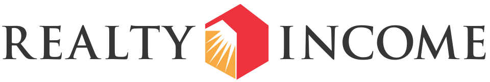

Realty Income Corporation
Realty Income Corporation은 미국과 영국을 비롯한 유럽 국가의 독립형 단일 임차인 상업용 부동산에 투자하는 부동산투자신탁이다. 보유 자산에는 NNN 임대차가 적용된다.
최종 업데이트

Realty Income Corporation는 어떤 브랜드인가
이 회사는 미국, 영국과 유럽의 다른 6개 국가에서 독립형 단일 임차인 상업용 부동산에 투자한다. 메릴랜드에 조직된 회사이며 본사는 캘리포니아주 샌디에이고에 있다.
분기별이 아니라 매월 배당금을 지급하는 소수의 부동산투자신탁 가운데 하나이다. 회사는 The Monthly Dividend Company라는 문구를 상표로 등록했다.
2024년 6월 30일 기준 15,450개 부동산을 보유했으며, 전체 임대 가능 면적은 약 335.3 million 제곱피트이다.
Realty Income Corporation는 어떻게 시작되고 성장했나
이 회사는 William E. Clark와 Evelyn J.
Clark가 1969년 설립했다. 첫 인수 자산은 1970년 초 매입한 Taco Bell 식당이었다.
회사는 매장 운영에 부동산이 필요한 사업자를 위해 현금으로 토지를 매입한 뒤 해당 부동산을 장기간 임대하는 방식을 사용했다. 1994년 기업공개를 통해 상장회사가 됐다.
이후 2019년 영국 슈퍼마켓 체인 Sainsbury's의 부동산 12개를 대상으로 매각 후 재임대 거래를 완료하며 미국 밖에서 처음으로 부동산을 매입했다.
Realty Income Corporation의 브랜드 아이덴티티는 무엇인가
분기 배당이 일반적인 부동산투자신탁 가운데 매월 배당을 지급하며, The Monthly Dividend Company 문구를 상표로 보유한 점이 구분점이다.
Realty Income Corporation의 대표 제품과 서비스는 무엇인가
핵심 투자 대상은 독립형 건물에 한 임차인이 입주하는 상업용 부동산이며, 해당 자산에는 NNN 임대차가 적용된다. 회사는 토지와 건물을 매입해 사업자에게 장기간 임대하는 방식으로 자산을 운용한다.
2021년 11월 VEREIT를 인수했고, 2022년 12월 Encore Boston Harbor를 대상으로 $1.7 billion 규모의 매각 후 재임대 거래를 완료했다. 2023년 8월에는 Bellagio Las Vegas에 $950 million을 투자한다고 발표했다.
Realty Income Corporation는 지금 어떤 상태인가
2024년 1월 23일 Spirit Realty Capital을 $9.3 billion에 인수했다. 2024년 6월 30일 기준 보유 자산은 15,450개이며 임대 가능 면적은 약 335.3 million 제곱피트이다.
2025년 11월에는 영국의 The Lexicon 쇼핑센터를 약 £150m에 인수한 사실이 발표됐다.
Realty Income Corporation 로고는 어떻게 변해왔나
자주 묻는 질문
Realty Income Corporation는 어느 나라 브랜드인가요?
Realty Income Corporation는 미국의 금융 브랜드입니다.
Realty Income Corporation는 언제 설립되었나요?
Realty Income Corporation는 1969년 설립되었습니다.
Realty Income Corporation의 브랜드 아이덴티티는 무엇인가요?
분기 배당이 일반적인 부동산투자신탁 가운데 매월 배당을 지급하며, The Monthly Dividend Company 문구를 상표로 보유한 점이 구분점이다.
Realty Income Corporation의 대표 제품은 무엇인가요?
핵심 투자 대상은 독립형 건물에 한 임차인이 입주하는 상업용 부동산이며, 해당 자산에는 NNN 임대차가 적용된다.
Realty Income Corporation는 어느 기업이 소유하고 있나요?
2024년 1월 23일 Spirit Realty Capital을 $9.3 billion에 인수했다.
Realty Income Corporation의 본사는 어디에 있나요?
Realty Income Corporation의 본사는 샌디에고에 있습니다(위키데이터 기준).
Realty Income Corporation의 공식 웹사이트는 어디인가요?
Realty Income Corporation의 공식 웹사이트는 http://www.realtyincome.com 입니다.
출처와 검증
Realty Income Corporation 관련 참고: 공식 웹사이트 · 위키데이터 Q7301386 · 영어 위키백과. 브랜드명은 한글과 원어를 함께 표기하되 데이터에 없는 표기는 만들지 않습니다. 기원 국가·설립연도는 검수된 정의문에서 확인된 값을 우선하고, 없을 때만 공식 웹사이트 URL이 일치하는 위키데이터 개체의 값을 씁니다. 위키데이터 값은 2026-09-12 기준입니다.